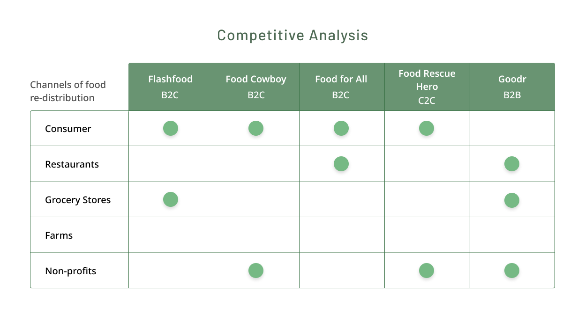
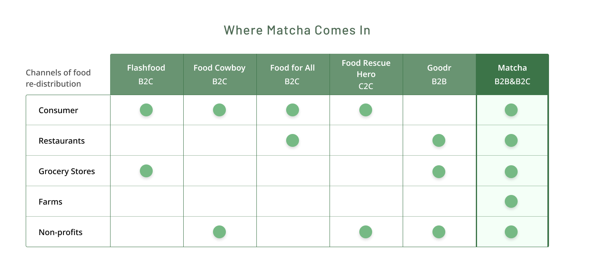
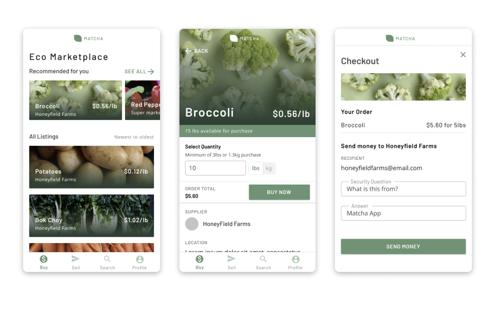
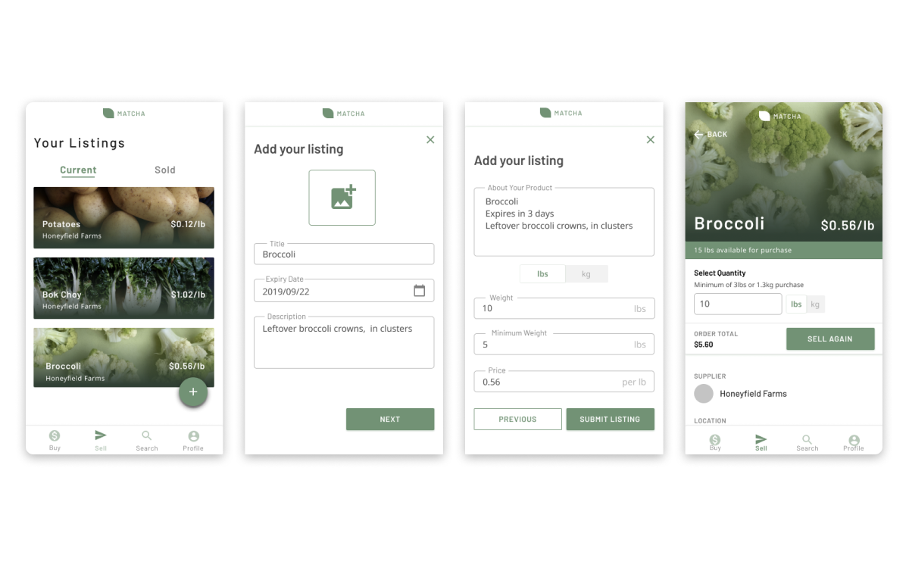

Matcha - Eco-friendly Marketplace
Role
User Experience Designer
Hackathon
Elevate Tech Jam 2019
Duration
September 20th to September 22nd 2019
Brief
Food waste is a big problem in today’s world and especially North America. Sustainability & reversing the damage we’ve done to our planet is more pressing than ever. Our project - Matcha - matches entities such as restaurants, suppliers, grocery stores and charities to each other to facilitate food exchange, in order to decrease waste.
For Elevate Tech Jam, our challenge was to create a finance-based solution in order to enable the communities around us. We decided to focus on sustainability.
Understanding the Problem
Initial Research - Understanding the Problem of Food Waste
We started off doing initial research about the food waste problem. Some of the statistics we found were alarming.
1. The restaurant industry is the largest producer of food waste
2. 11.4 million TONS of food is wasted per year in the US alone.
3. $25 BILLION dollars (USD) of food is wasted each year.
Our Approach - Food waste is a logistics issue
Food waste is completely avoidable. Everyone needs food, and solving food waste is a matter of redistributing the surplus to those who have a deficit.
The Challenge
How might we redistribute food to decrease waste, lost capital from food waste, and enable our communities financially?
User Story
| As a: | Small Business Owner |
|---|---|
| I want to: | Prevent food waste |
| So that: | I can decrease my carbon footprint and losses from food waste, consequently increasing my net profits. |
Market Research - What solutions are available?
We wanted to find out what other applications and services existed to combat the problem of food waste. I examined their features and tried to find where our opportunity would lie.
We looked at existing apps that tackled food waste logistically as well.
Insights
1. Most existing applications facilitate distribution of food only between 2 or 3 channels
2. Most target consumers, or non-profits which distribute to consumers.
The Solution
The Area of Opportunity for Matcha - Open Marketplace Model
Matcha steps into the industry as an open marketplace. Rather than only facilitating food distribution between 2 or 3 channels, all different types of businesses can use Matcha to distribute their goods.
Restaurants to Consumer and to other Restaurants: Restaurants can distribute uneaten food to consumers at a discount. Another avenue of food distribution is selling unused produce to other restaurants that may need that particular ingredient.
Grocery Store to Consumer and Restaurants: Grocery Stores can sell produce that is about to expire or would otherwise be thrown out which would be available to purchase by consumers and other small businesses using the app.
Farms to Consumer and Restaurants: Many farms have produce that look misshapen or otherwise unsuitable for selling in a grocery store, but are still completely safe to eat. Produce such as that can be sold at lower prices to restaurants and consumers.
Non-profits to Consumers: Non-profits can sell food at decreased prices. They can use our platform as a way to generate more donations to sustain their organization.
Final Designs & Outcomes
Buying products from the eco-marketplace
Our app functions like many online e-commerce platforms, making it easy to use as many users already have an existing mental model of how to operate it.
Next steps for the buyer flow
Our vision for buying the produce would be to partner with existing delivery companies (Amazon, Uber) in order to deliver the items to the purchaser.
Selling products in the eco-marketplace
This flow was built with the help of my teammate, Jiajia!
Similarly to the buyer flow, selling an item in our marketplace is similar to other e-commerce experiences. This minimizes any learning curve or confusion that comes with using the app.
Takeaways
Sustainability is something my team and I are passionate about solving, and it was fulfilling getting the chance to work in this problem space over the weekend. Personally, I try to use a reusable mug/cup and straw when I can. Overall, I was glad to gain the experience of taking market research and analyzing the data with my team to discover where the opportunity for our product lied.